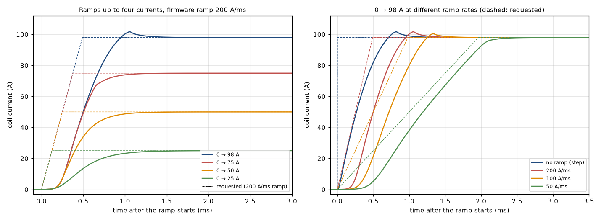
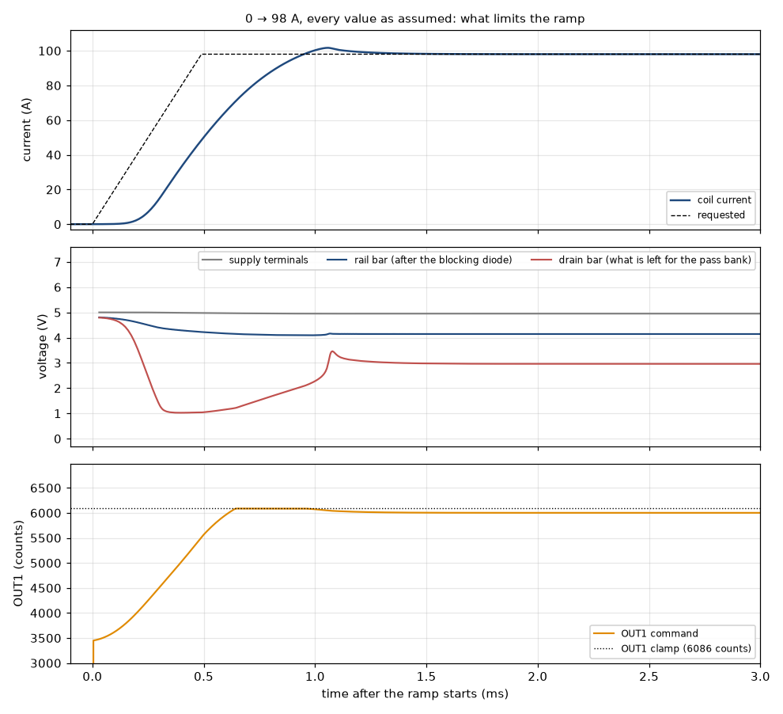
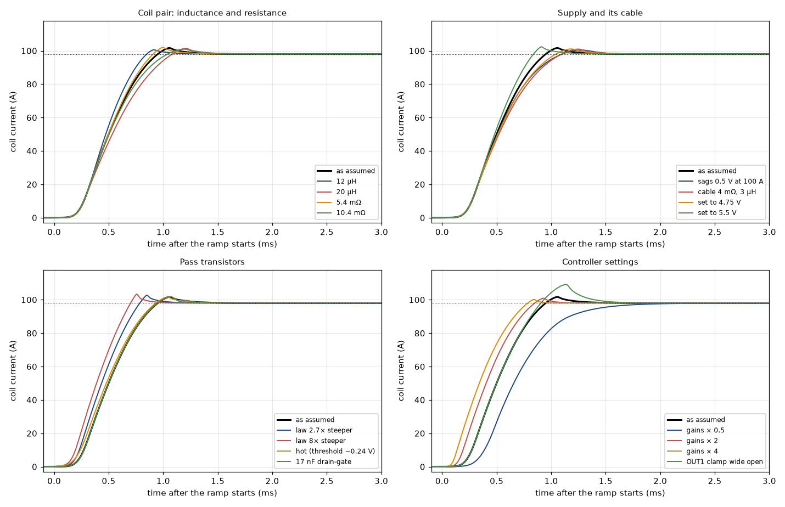
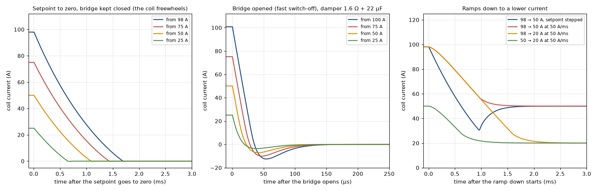

Circuit model (Ansys, design mot_ft): the two MOT coils on the SE-600-5, blocking diode and 5KP30A fitted, damper 1.6 Ω + 22 µF, controller gains kp 3.7 counts/A, ki 111 counts/(A·ms), firmware ramp limit 200 A/ms, no feedforward. Nothing here is measured: the 100 A setup is not built. 41 runs; in most of them one assumed value is changed to see how much the answer moves. Made 2026-11-19 with run_sims.py --m100 and mot_expect.py.
Three things limit the accuracy, and they are different for each number: (a) how well this model did on the bench for the same kind of measurement, (b) values of the 100 A setup that are not measured yet (the range column: the spread when each is changed over what seems plausible), (c) effects that are not in the model at all. Green: expect it within about 25 %. Yellow: within about 30 %, or right direction and size. Red: do not rely on it.
| Number | Model | Range over the unknown values | What it rests on | Same kind of number on the bench (model / measured) | Trust |
|---|---|---|---|---|---|
| Setpoint to zero from 98 A, bridge closed: time to the zero window | 1.68 ms | 1.26 ms to 2.09 ms | Coil inductance (computed, taken ±25 %), the bridge diode's voltage at 100 A (0.8 V, from the datasheet), coil and cable resistance | 2 A → 0: 159 µs / about 170 µs | ±25 %, mostly the inductance |
| Fast switch-off from 98 A: time to zero | 34 µs | 27 µs to 43 µs (12 to 20 µH, from 100 A) | Coil inductance and the 5KP30A's clamping voltage (45–49 V at this current, datasheet) | 2 A: 21 µs / 25 µs; clamp 42 V / 49 V | ±25 % |
| Fast switch-off: reversed current and how long it lasts | -12 A, quiet after 138 µs | -11 to -14 A | The damper actually fitted (values not chosen yet) and the coil inductance | 2 A: −0.33 A / −0.31 A, but one third too fast | ±30 %; follows the damper |
| Rail bar and drain bar peaks at a switch-off | 49 V (fast), 19 V (bridge closed) | 17 V to 19 V (bridge closed) | Datasheet curves of the two surge protectors, typed from memory; supply-cable inductance (1 µH assumed) | Fast: 42 V / 49 V. Bridge closed: 14.9 V / 12.1 V | ±20 %; check the datasheets |
| Ramp 0 → 98 A: time to 90 % | 806 µs | 622 µs to 904 µs | Supply voltage left after the blocking diode, cable and coil resistance; coil inductance; how long the controller takes to get the pass bank conducting (about 192 µs here, with no feedforward) | 0 → 2 A: 0.48 ms / 0.45–0.47 ms (set by the controller there, by the supply here) | ±30 % |
| Ramp 0 → 98 A: time to within 1 % / 0.1 % | 1.24 ms / 1.61 ms | 890 µs to 1.44 ms / 1.13 ms to 1.76 ms | As above, plus the controller gains (to be re-tuned on the hardware) and the overshoot | 0 → 2 A, 98 %: 0.69 ms / 0.62–0.65 ms | A lower limit. Noise, warming and ringing can only add |
| Overshoot at 98 A | 3.7 % | 2.4 % to 5.4 % | Where the OUT1 clamp sits above the hold value, the gains, the pass-transistor law | 0.0 % / 1–2.4 %: the model showed less than the bench | Size not reliable; that there is one, yes |
| OUT1 command at 98 A (sets the clamp) | 6001 counts | 4788 to 6010 counts | The pass-transistor law, measured only up to 2.5 A and stretched 40 times | Within 2–8 % inside the measured range | Not predicted. Measure it first |
| Voltage left across the pass bank at 98 A (heat) | 3.0 V, 48 W per transistor with its ballast | 2.5 V to 3.2 V | Supply setting, blocking-diode drop (0.8 V), every resistance in the loop (cable and contacts not measured) | Rail bar at 2 A: 4.61 V / 4.60 V | ±0.5 V |
| Small wobble, ringing or noise at a hold; the 0.1 % stability | none | none | Not in the model: it has no noise, and on the bench it did not keep the 10–20 kHz ringing going | Ringing: dies away / stays at ±0.1 A | Cannot say |
Not in the model, and able to change the picture:

| Ramp | Wait before current flows | 90 % | Within 1 % | Within 0.1 % | Peak | OUT1 at the hold | Across the pass bank at the hold | Heat per pass transistor with its ballast resistor |
|---|---|---|---|---|---|---|---|---|
| 0 → 25 A, 200 A/ms | 145 µs | 906 µs | 1.46 ms | 2.01 ms | 25.0 A (+0.0 %) | 4760 counts | 4.21 V | 18 W |
| 0 → 50 A, 200 A/ms | 167 µs | 736 µs | 1.18 ms | 1.61 ms | 50.0 A (+0.0 %) | 5259 counts | 3.78 V | 31 W |
| 0 → 75 A, 200 A/ms | 182 µs | 661 µs | 1.06 ms | 1.44 ms | 75.0 A (+0.0 %) | 5667 counts | 3.35 V | 42 W |
| 0 → 98 A, 200 A/ms | 192 µs | 806 µs | 1.24 ms | 1.61 ms | 101.7 A (+3.7 %) | 6001 counts | 2.96 V | 48 W |
| 0 → 98 A, 100 A/ms | 280 µs | 1.09 ms | 1.45 ms | 1.82 ms | 100.4 A (+2.5 %) | 6001 counts | 2.96 V | 48 W |
| 0 → 98 A, 50 A/ms | 406 µs | 1.91 ms | 2.22 ms | 2.58 ms | 98.0 A (+0.0 %) | 6001 counts | 2.96 V | 48 W |
| 0 → 98 A, no ramp limit | 24 µs | 568 µs | 1.01 ms | 1.37 ms | 101.7 A (+3.7 %) | 6001 counts | 2.96 V | 48 W |
Times count from the moment the setpoint starts to rise. Small ramps are not faster than large ones: the first 145 µs or so go by before any current flows, while the controller raises OUT1 from its resting value to where the pass bank starts to conduct, and near that point the bank answers weakly, so the controller is slow there. Large ramps then run into the supply's limit instead.

At 98 A the supply terminals are at 4.95 V, the rail bar at 4.14 V (the blocking diode takes 0.8 V) and 3.0 V are left across the pass bank. During the ramp that last voltage falls to about 1 V: the bank is then fully open and the controller's command sits on the clamp. The overshoot comes from the time the controller needs to come back off the clamp.

| Changed | 90 % | Within 1 % | Within 0.1 % | Peak | OUT1 at the hold | Across the pass bank | Zero window after setpoint → 0 |
|---|---|---|---|---|---|---|---|
| nothing (every value as assumed) | 806 µs | 1.24 ms | 1.61 ms | 101.7 A (+3.7 %) | 6001 | 2.96 V | 1.68 ms |
| Coil pair 12 µH | 730 µs | 1.04 ms | 1.40 ms | 100.6 A (+2.6 %) | 6001 | 2.96 V | 1.26 ms |
| Coil pair 20 µH | 904 µs | 1.39 ms | 1.75 ms | 101.5 A (+3.6 %) | 6001 | 2.96 V | 2.09 ms |
| Coil pair + cable 5.4 mΩ | 783 µs | 1.19 ms | 1.56 ms | 102.0 A (+4.1 %) | 6001 | 3.16 V | 1.82 ms |
| Coil pair + cable 10.4 mΩ | 846 µs | 1.36 ms | 1.69 ms | 100.9 A (+3.0 %) | 6004 | 2.67 V | 1.51 ms |
| Supply cable 0.5 mΩ, 0.3 µH | 779 µs | 1.19 ms | 1.56 ms | 101.9 A (+4.0 %) | 6001 | 3.06 V | 1.68 ms |
| Supply cable 4 mΩ, 3 µH | 890 µs | 1.42 ms | 1.76 ms | 101.0 A (+3.1 %) | 6003 | 2.72 V | 1.68 ms |
| Supply that sags 0.5 V at 100 A, 3 mF | 868 µs | 1.44 ms | 1.71 ms | 100.4 A (+2.4 %) | 6010 | 2.52 V | 1.68 ms |
| Supply output capacitance 1 mF | 806 µs | 1.24 ms | 1.61 ms | 101.7 A (+3.7 %) | 6001 | 2.96 V | 1.68 ms |
| Supply output capacitance 47 mF | 805 µs | 1.24 ms | 1.61 ms | 101.7 A (+3.7 %) | 6001 | 2.96 V | 1.68 ms |
| Supply set to 4.75 V | 856 µs | 1.36 ms | 1.70 ms | 101.1 A (+3.1 %) | 6003 | 2.71 V | 1.68 ms |
| Supply set to 5.25 V | 767 µs | 1.17 ms | 1.53 ms | 102.1 A (+4.2 %) | 6001 | 3.21 V | 1.68 ms |
| Supply set to 5.5 V | 737 µs | 1.11 ms | 1.48 ms | 102.4 A (+4.5 %) | 6001 | 3.46 V | 1.68 ms |
| Pass-FET law 2.7 times steeper | 690 µs | 1.01 ms | 1.30 ms | 102.7 A (+4.8 %) | 5266 | 2.96 V | 1.68 ms |
| Pass-FET law 8 times steeper (datasheet-like) | 622 µs | 890 µs | 1.13 ms | 103.3 A (+5.4 %) | 4788 | 2.96 V | 1.68 ms |
| The same with the gains halved | 728 µs | 804 µs | 1.22 ms | 98.0 A (+0.0 %) | 4788 | 2.96 V | 1.68 ms |
| Hot pass FETs (threshold 0.24 V lower) | 787 µs | 1.22 ms | 1.59 ms | 101.6 A (+3.7 %) | 5789 | 2.96 V | 1.68 ms |
| Pass-FET drain-gate capacitance 17 nF (the value that rings on the bench) | 805 µs | 1.25 ms | 1.66 ms | 101.8 A (+3.9 %) | 6001 | 2.96 V | 1.68 ms |
| Controller gains × 0.5 | 1.11 ms | 1.76 ms | 2.39 ms | 98.0 A (+0.0 %) | 6001 | 2.96 V | 1.68 ms |
| Controller gains × 2 | 704 µs | 1.01 ms | 1.24 ms | 100.9 A (+3.0 %) | 6001 | 2.96 V | 1.68 ms |
| Controller gains × 4 | 641 µs | 882 µs | 1.02 ms | 100.2 A (+2.2 %) | 6001 | 2.96 V | 1.68 ms |
| OUT1 clamp wide open (8191 counts) | 795 µs | 1.51 ms | 1.87 ms | 109.1 A (+11.3 %) | 6001 | 2.96 V | 1.68 ms |
| OUT1 clamp at the provisional 5200 counts | — | — | — | stops at 47 A | 5200 | 3.83 V | 1.02 ms |
| No damper | 806 µs | 1.26 ms | 1.61 ms | 101.6 A (+3.7 %) | 6001 | 2.96 V | 1.68 ms |
| Damper 1.6 Ω + 100 µF | 807 µs | 1.24 ms | 1.55 ms | 101.8 A (+3.9 %) | 6001 | 2.96 V | 1.68 ms |
The gains are per count, so a steeper pass-transistor law acts like higher gains: the two rows with the 8 times steeper law show that halving the gains then brings back a ramp without overshoot. The gains will be tuned on the hardware; the table shows which way each change pushes.

| Setpoint to zero, bridge kept closed | Down to 10 % | Inside ±0.5 A | Fall rate | Drain bar peak |
|---|---|---|---|---|
| From 25 A | 561 µs | 627 µs | 40 A/ms | 18 V |
| From 50 A | 927 µs | 1.07 ms | 47 A/ms | 19 V |
| From 75 A | 1.20 ms | 1.41 ms | 54 A/ms | 19 V |
| From 98 A | 1.40 ms | 1.68 ms | 61 A/ms | 19 V |
| Fast switch-off (bridge opened), damper 1.6 Ω + 22 µF | Zero after | Reversed current | Inside ±0.5 A for good | Rail bar peak |
|---|---|---|---|---|
| From 25 A | 19 µs | -3.6 A | 100 µs | 46 V |
| From 50 A | 22 µs | -7.1 A | 116 µs | 47 V |
| From 75 A | 28 µs | -10.1 A | 128 µs | 48 V |
| From 98 A | 34 µs | -12.3 A | 138 µs | 49 V |
| From 100 A, coil pair 12 µH | 27 µs | -10.8 A | 132 µs | 50 V |
| From 100 A, coil pair 20 µH | 43 µs | -13.7 A | 146 µs | 50 V |
| Down to a lower current | 90 % of the change | Within 1 % of the new value | Within 0.1 % | Dip below the new value |
|---|---|---|---|---|
| 98 → 50 A, 50 A/ms | 1.03 ms | 1.46 ms | 1.90 ms | 0.0 A |
| 98 → 20 A, 50 A/ms | 1.59 ms | 2.51 ms | 3.11 ms | 0.0 A |
| 50 → 20 A, 50 A/ms | 848 µs | 1.54 ms | 2.15 ms | 0.0 A |
| 98 → 50 A, setpoint stepped (no ramp limit) | 544 µs | 1.67 ms | 2.10 ms | 19.5 A |
With those five in hand the model can be re-run and the ranges in section 2 should shrink toward the bench level (about 10 %).